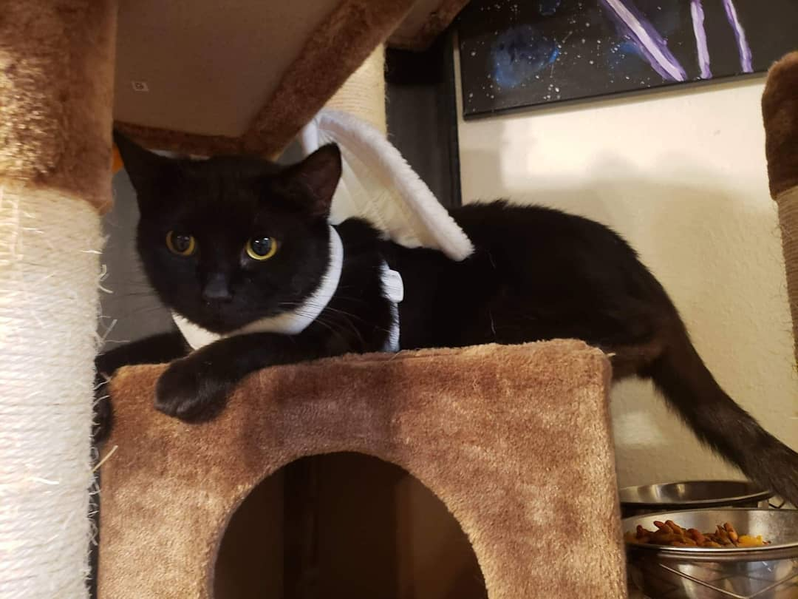
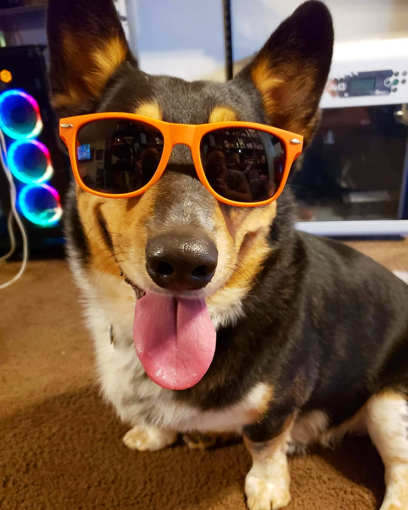
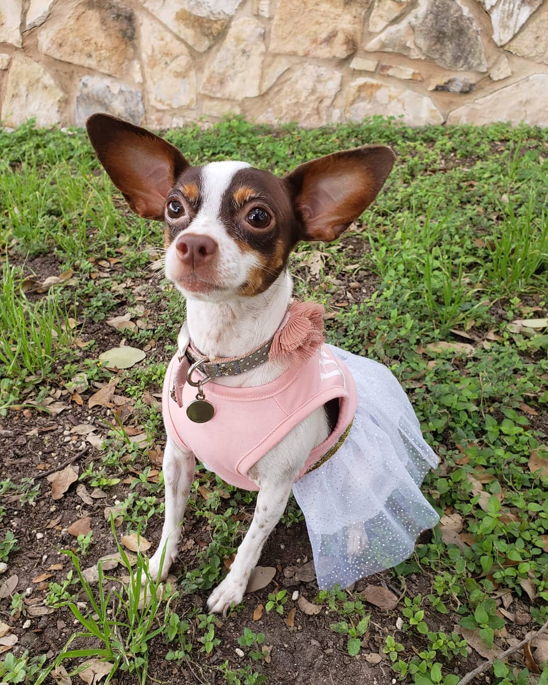
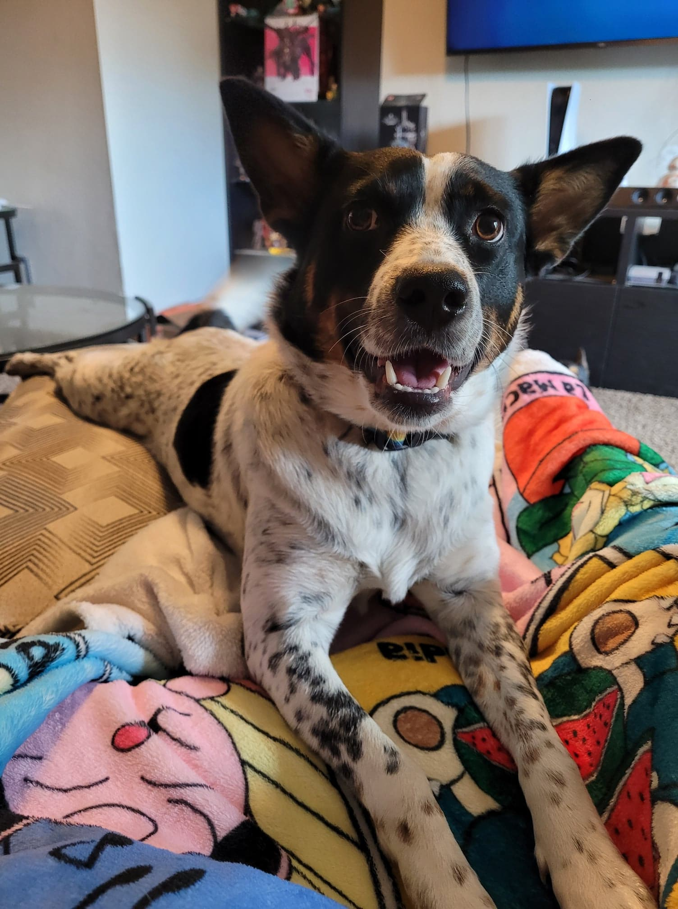

The first pet in our family is Coco. She is 10 years old. She came along with my husband and used to be a grumpy, mean cat. However, I was able to melt that cold, tough exterior with my kindness. Now, she is a fat, fluffy, and happy cat that gets all of the cuddles.
The first pet my husband and I got together was Rocket. He is 7 years old. He is a Corgi/Blue Heeler mix. He was my graduation gift for earning my Bachelors. He is a grumpy old man who does not like socializing. However, for the people he is friends with, he is a true ride or die. I'm becoming more like him everyday.
Leia is a 6 year old Chihuahua. She is the princess of the house who has everyone wrapped around her little paw. She is the biggest cuddler and will steal blankets. Her favorite hobby is to stare and shake while you eat in hopes that you drop some of your food. Like Leia, I love food.
Maple is the newest member of the Brown family. She is a 1 year old Blue Heeler/ Mini Aussie mix. She is super hyper, athletic, and a quick learner. She will ask you to play fetch all day until you arm falls off. Afterwards, she will take your fallen arm to you to play more fetch.
